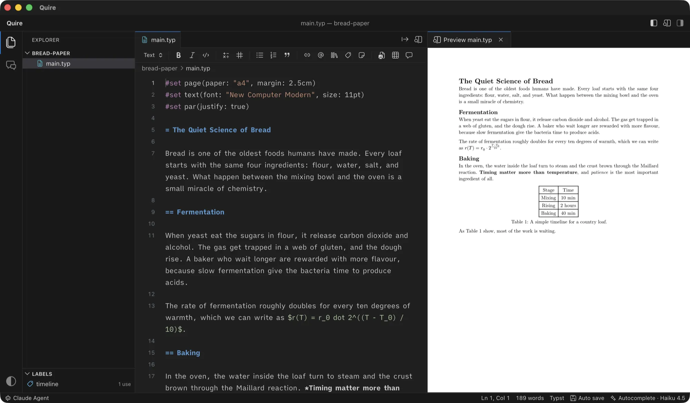
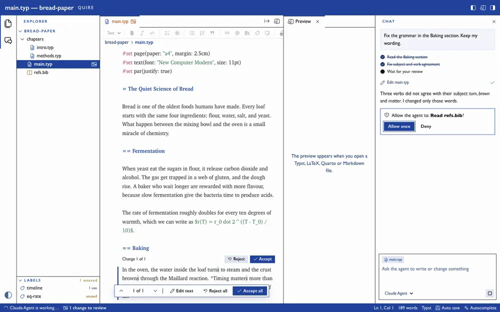
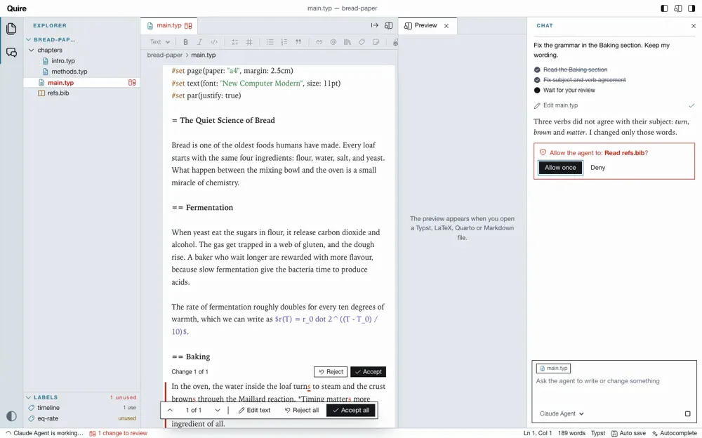
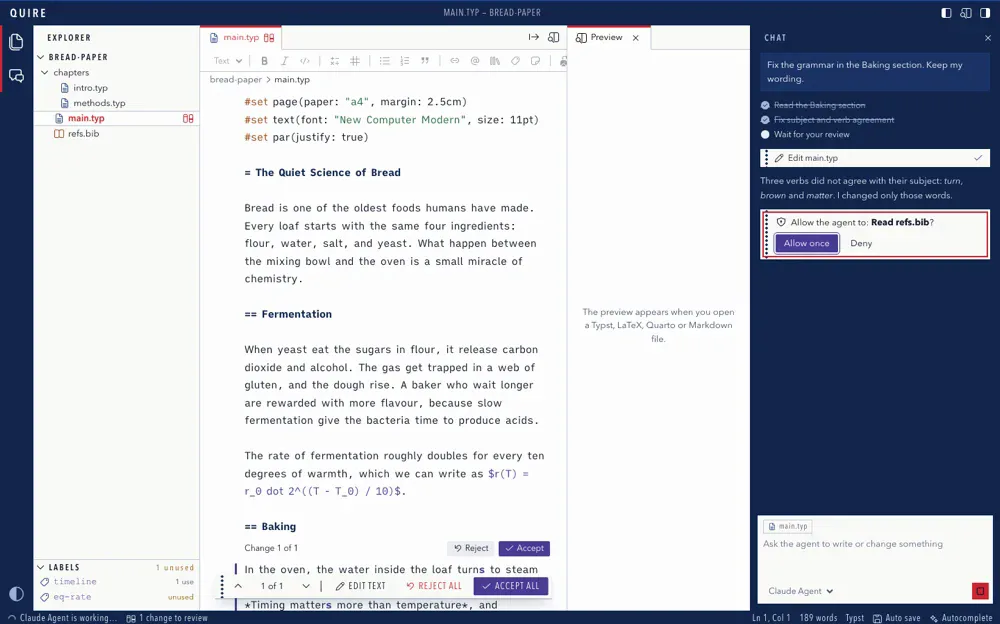
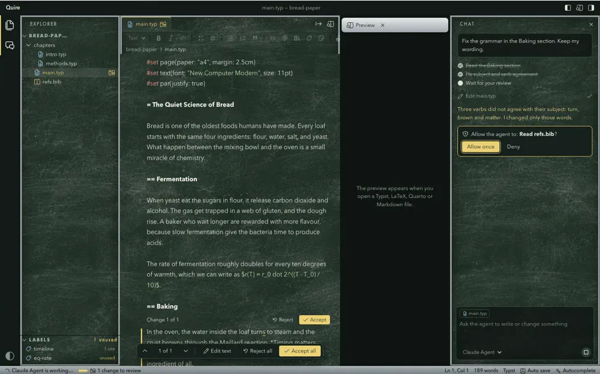

Your agent writes. Nothing lands without your say.
Quire Writer is a free, open-source writing app for Typst, LaTeX, Quarto and Markdown. Ask the AI agent you already use to draft, fix or rewrite your text. Every change waits for your review.
- Typst
- LaTeX
- Quarto
- Markdown
Free and open source. For Mac (Apple Silicon), Windows and Linux.
Try it. Review the agent's edits.
The agent fixed three verbs. Accept or reject each change, and only what you accept reaches the preview. Switch the file to see LaTeX, Quarto or Markdown.
2 Baking
| Stage | Time |
|---|---|
| Mixing | 10 min |
| Rising | 2 hours |
| Baking | 40 min |
Table 1: A simple timeline for a country loaf.
As Table 1 shows, most of the work is waiting.
Fix the grammar in the Baking section. Keep my wording.
- Read the Baking section
- Fix subject and verb agreement
- Wait for your review
Three verbs did not agree with their subject: turn, brown and matter. I changed only those words.
Ask the way that fits the moment.
Three ways to ask, and all three end the same way: as changes you can accept, reject, or edit before you accept.
Chat
Ask the agent to write or change things anywhere in your folder: a new section, a fix across chapters, a table from your notes. If a turn goes wrong, "Restore files to before this message" undoes all of it.
Edit a selection
Select some text, press Cmd+K and say what you want. The agent changes only that part.
Autocomplete
Pause while you type and grey text suggests how the sentence goes on. Tab accepts it. Turn it off in the top bar when you want quiet.
Use the agent you already have.
Quire talks to agents through the Agent Client Protocol. Pick Claude, Codex, Gemini or any other agent in the ACP registry, and switch agent or model whenever you like.
The agent runs on your Mac with your own login and your own subscription. Quire has no account and no key of its own.
- Agoragentic
- Amp
- Google Antigravity
- Auggie CLI
- Autohand Code
- Claude Agent
- Cline
- Codebuddy Code
- Codex
- Cortex Code
- Corust Agent
- crow-cli
- Cursor
- DeepAgents
- Devin
- DimCode
- Dirac
- Factory Droid
- fast-agent
- Gemini CLI
- GitHub Copilot
- GLM Agent
- goose
- Grok Build
- Harn
- Junie
- Kilo
- Kimchi
- Kimi CLI
- MiniMax Code
- Minion Code
- Mistral Vibe
- Nova
- OpenCode
- pi ACP
- Poolside
- Qoder CLI
- Qwen Code
- siGit Code
- Stakpak
- VT Code
See the page while you write.
A live preview sits next to the editor, made by the tool each kind of document already uses.
| Typst | The preview comes from tinymist. Click text in the preview to jump to it in the editor; the preview follows the caret. | Ships inside the app. Nothing to install. |
|---|---|---|
| LaTeX | The PDF, compiled on every save. Chapters with % !TEX root = main.tex show the main file. | Uses your own TeX: latexmk from MacTeX or TeX Live, or Tectonic. |
| Quarto | quarto preview, which renders again on every save. | Uses your own Quarto. |
| Markdown | Drawn as you type, with math. | Nothing to install. |
Export the whole document as PDF or Word, or as OpenDocument, web page, e‑book, Markdown, LaTeX or Typst. Citations become formatted references, and build files stay out of your project.
One layout. Make it yours.
Quire has a theme system with several looks built in, from VS Code's Dark Modern and Light Modern to its own book covers, printer's proof and chalkboard. A theme changes the look; every panel stays where your hands expect it.





Dark Modern, VS Code's own dark theme.
Made for long documents.
Grammarly and spellcheck work
The editor is a plain text field, so the macOS spellchecker and the Grammarly for Mac app work in it.
Labels
Every label in the project, how often it is used, and which ones nothing refers to. Click one to go to it.
Cite by DOI or arXiv ID
Adds the paper to your .bib file and the citation at the cursor.
Formatting bar
Headings, math, lists, links, citations, footnotes, figures and tables, in the markup of the open file.
A start for every kind
A new project gets a starter file that shows how that kind of document looks. A file already there is never replaced.
Your files, your way
New file, new folder, rename, and delete to the Trash. Auto save, or save yourself with Cmd+S.
Built for documents. Not for code.
Why not just use VS Code, Cursor or Claude Code? They are great tools, and they are built for code. Here is what each one does out of the box.
| VS Code | Cursor | Claude Codein a terminal | ||
|---|---|---|---|---|
| Made for writing, not for code | Yes | No | No | No |
| Typst, LaTeX and Quarto preview, no setup | Yes | extensions | extensions | No |
| Grammarly and macOS spellcheck | Yes | No | No | No |
| AI edits as tracked changes in your prose | Yes | code diffs | code diffs | terminal diffs |
| Cite by DOI, export to Word and e-book | Yes | extensions | extensions | No |
Already use Claude Code? Keep it. Quire runs the same Claude agent with your login, and adds the page, the preview and the review.
What each tool does out of the box, without extensions. October 2026.
No account. No telemetry. No server of its own.
Your files stay on your Mac. Quire goes online only for these, and nothing else.
- Your agentIt runs on your Mac with your own login. For chat, Cmd+K and autocomplete it sends your request, and the parts of your project it reads, to its provider. That provider's terms apply.
- Starting an agent the first time
npxoruvxdownload it from npm or PyPI. - Citations by DOI or arXiv IDOne request to doi.org.
- UpdatesA check on GitHub at start and once a day, then the download of a new version.
Your own TeX, Quarto or Pandoc may go online on their own, for example to fetch packages.
Get Quire.
Mac
Download the .dmg, open it and drag Quire to Applications. Needs a Mac with Apple Silicon. New versions install in the background and open at the next start.
What else you need
An agent you are logged in to, for example Claude Code. Most agents need Node. For the LaTeX preview: MacTeX or Tectonic. For Quarto: Quarto. For Word and the other export formats: Pandoc, or Quarto, which carries its own.
Something does not work? Choose Quire > Check Setup in the app, or see Troubleshooting.
Linux, experimental
Take the .AppImage (most systems) or the .deb (Debian, Ubuntu) from the same release. It is built and started on every change, but used far less than the Mac app: please report what does not work.
Windows, experimental
Run the -setup.exe (x86_64) from the same release. It is not signed, so Windows warns first: choose More info, then Run anyway. It is new and does not update itself yet: download the new installer for each version, and please report what does not work.
Build it yourself
Needs Rust, Node and tinymist. The README has the details.
cd web && npm install && npm run build && cd .. mkdir -p build/bin cp "$(which tinymist)" build/bin/tinymist-aarch64-apple-darwin cargo run --manifest-path src-tauri/Cargo.toml -- sample